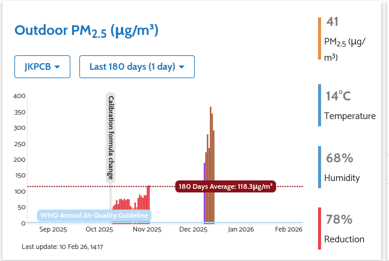
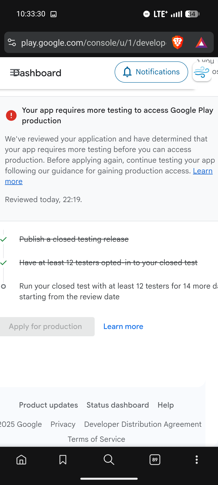
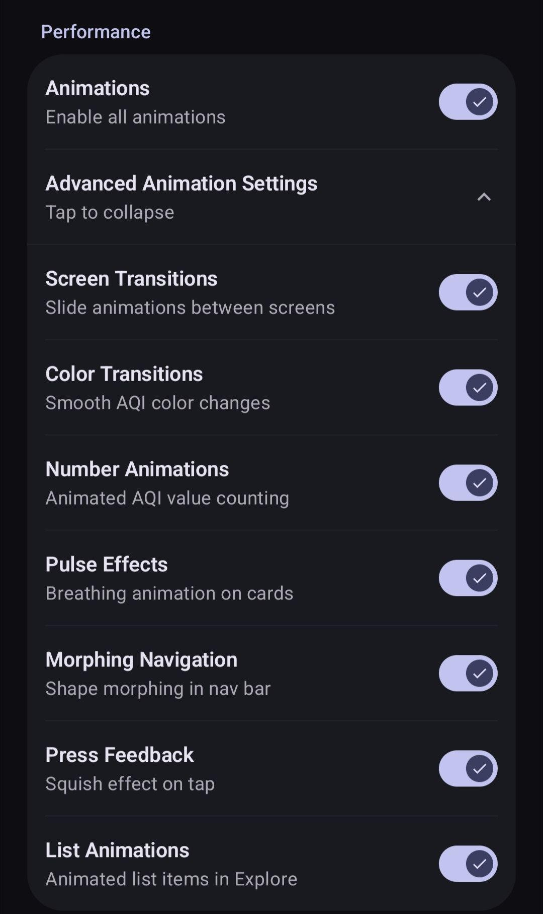
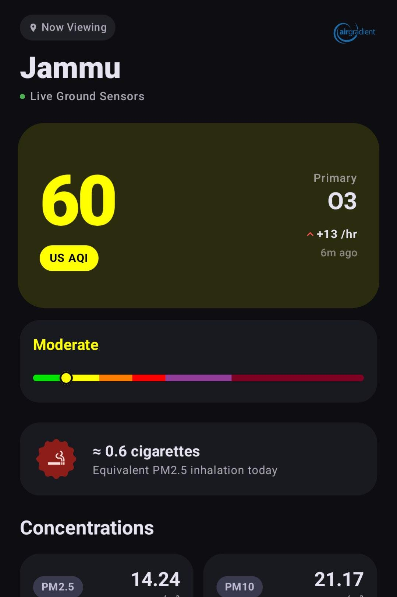
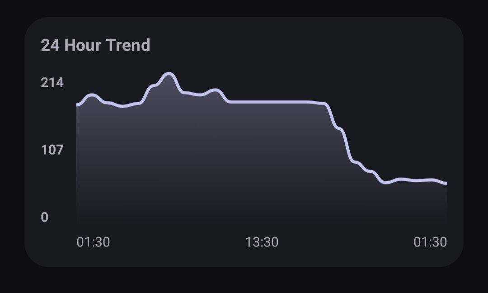
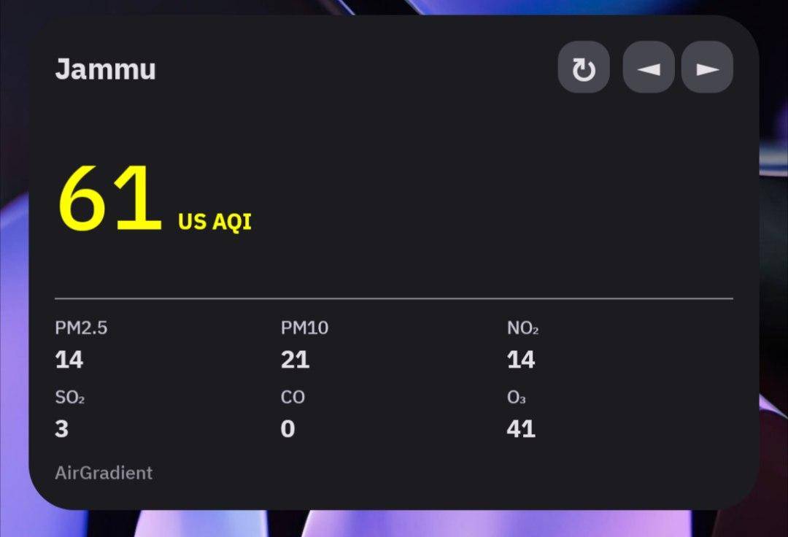
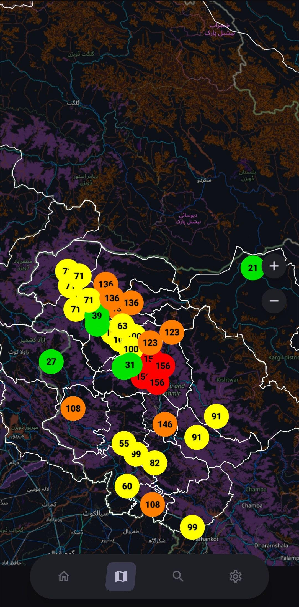

Creating an open-source & accurate AQI service for J&K
This post will be a little different than what I usually post. This isn't about AOSP or Linux or kernels, but rather about a project I recently kickstarted with my best friend, Flashwreck.
A boring Tuesday morning
All of this started when me and Flashwreck were complaining about... VPN bans of all things. But the question of Air Quality was brought up. I merely suggested that we could make an open-source AQI app that would have Material Design 3 theming, because all the other ones that I knew of looked quite ugly.
Flashwreck then suggested the idea about open-source AQI sensors being installed by individuals. This had basically kickstarted all of this. It was just a boring Tuesday morning and we got some bullshit idea and ran with it.
This post will be a deep dive into the code, infrastructure, design decisions we made, management, and the POVs of both of us going through this project.
The source code for the project is available on GitHub at https://github.com/breathe-OSS/breathe.
Down the rabbit hole
We started to think about how we can get the AQI data for the app. We did some research about existing AQI infrastructure in Jammu and Kashmir. We found out that the number of sensors in Jammu was very sparse. We started to look into government stations and as well as satellite based APIs.
For now, we didn't have much information on how Air Quality itself is calculated, and who decides these calculations. We started experimenting with different APIs and data sources, we found out that the government stations were inaccurate and the values were consistently and constantly lower than any other data source. Even when the air outside felt absolutely terrible to breathe. We do not know the exact root cause of this, but it is still obviously inaccurate and we cannot rely on it.

One of the people in our team (spoilers, lol) had placed a reference low cost AirGradient sensor
directly next to the CPCB station in Rajbagh Srinagar,
and that reference station that he placed constantly 10-15x higher PM readings than the official
government station. This was the final nail in the coffin for us, and we decided that we cannot rely on
government stations at all.
We started to look for free weather APIs and found OpenWeather's Air Pollution API. When we used it, it used to show very high PM readings at all times which was inaccurate since the actual PM values differ at night and day at certain periods of time. We looked into smoothening it but it would make the data very inaccurate and laggy.
We found out that OpenMeteo was a very reliable source, and we emailed them regarding their API usage; where they specified that we can use their API for free as long as we do not exceed 10k requests per day, which is more than enough for our use case. We also found out that they have a very good documentation and the data is very accurate and smooth.
A stranger from Discord
When we posted our idea on r/Jammu's discord server, we got a DM from a well-known person in the server, their name is redacted by their request. They were interested in our project and wanted to help us out. They also wanted to contribute to solving this rising AQI problem in Jammu and Kashmir.
We started to discuss how we could do things and we figured out that we could use a reliable sensor from AirGradient and this person who was working with us ordered it. This is how we got one ground sensor in Jammu.
Well, when we ordered the sensor, Flashwreck went ahead and emailed AirGradient, described our project and also asked about some concerns we had regarding data usage and PM10 availability. And coincidentally, we found Altair. Who was also a resident of J&K where he described that he had been pursuing deploying air quality monitors to strengthen the little network of air quality monitors present in the region.
He also described how he had felt quite alone when pursuing this on his own. So we started talking, and eventually we added him to our discussion group.
The government stations are lying
After we started talking with Altair, who is also an employee working at AirGradient, he told us that he had placed a reference station next to the inaccurate CPCB station mentioned previously. He also explained that he had a few run-ins with the workers there, who had not been very helpful in explaining why their data was so inaccurate.
After that, we decided to pause discussion about JKPCB and started thinking about buying and setting up more AirGradient units across J&K, after the first one we bought was set up in Jammu City. After some research, Mr. X decided to purchase 3 more units.
After about a month of ordering those sensors, and after dealing with logistics issues, we received the sensors and set 2 of the 3 sensors up in Rajouri and Gandhi Nagar. Rajouri being a mountainous and hilly area, and Gandhi Nagar being an urban area inside Jammu City also being used to cross-reference the earlier Jammu City node we had set up.
Overall, the installation process went smooth and we got these sensors up and running.
Four rejections and a Play Store listing
This was the day we got production access for our app on Google Play. Flashwreck and me were ecstatic on the day, however when we submitted the app for review, it got rejected. Partially due to us not having a separate page for the privacy policy and some issues with the full description on Google Play.

We set up a new page for the privacy policy at breatheoss.app/privacy as well as rewrote the Google Play description with alternative phrasing, and hoped for an approval.
And on the sixth of February, we were officially launched on the Google Play Store. This was a pretty big moment for all of us because we had worked quite hard for this app and had gotten rejected 4 times before due to various (although incompetent) reasons. But it is what it is.
Where this is going
Currently we have one sensor in stock, along with one more on the way. We plan to deploy these in Kishtwar, which is another hilly town, and near the Mata Vaishno Devi Temple, which is a very famous pilgrimage in our area. We also have plans to contact institutions such as UNICEF and possibly universities to apply for future grants.
Overall, we have a pretty strong foundation as of now.
Breathe, breathe in the air
This is my personal favorite. The name. It is an obvious (or maybe not) reference to the song "Breathe" by Pink Floyd. I mean, it's a great song, and it fits the project perfectly. Both of us are huge fans of Pink Floyd, so it was a no-brainer.
The opening line of the song is literally "Breathe, breathe in the air". It's from The Dark Side of the Moon, which, if you haven't listened to it, stop reading this and go listen to it right now. Seriously. The whole album is about the things that drive people mad, the pressures of life, the passage of time. And in the middle of all that, the song "Breathe" is this calm, almost meditative moment telling you to just... breathe.
For a project about the air you literally breathe every day, and about making sure that air isn't slowly killing you, the name felt almost too perfect. It's also just a clean, one-word name that's easy to remember and looks good on a Play Store listing. Sometimes things just work out.
Pyyython
The backend of this project is written in Python. I know, I know, that might upset some people, but for this project I think it works just fine. It uses FastAPI for the API, and Postgres for the database. You can check it out at github.com/breathe-OSS/api.
The interesting stuff is in how the data actually flows. It's not just "hit an API and return the number". There's a lot more going on.
The hybrid pipeline
Not every zone has a physical AirGradient sensor. Some do (Jammu, Srinagar, Rajouri), and some don't. For zones without sensors, the API falls back to Open-Meteo's satellite-based air quality data. But it gets more interesting than that.
For sensor zones, the API fetches PM2.5 and PM10 from AirGradient, but it still needs the gas
pollutants (NO₂, SO₂, CO, O₃) to calculate the full AQI. Those come from Open-Meteo. So the
backend fires both requests concurrently with asyncio.gather and merges the results
into one unified response. If the AirGradient sensor goes offline (stale data older than 1 hour),
the whole zone seamlessly falls back to Open-Meteo, and the app shows a warning that it's using
satellite estimates instead.
if data_age > 3600: # 1 hour
raise ValueError(f"Sensor data is stale ({int(data_age/60)} minutes old)")
# Falls back to:
fetched_data = await fetch_openmeteo_live(lat, lon, zone_type)
sensor_offline_warning = "Physical sensor temporarily offline. Using satellite-based estimates from Open-Meteo."Merging two timelines
The trickiest part of the backend is the history merge. The app needs a 24-hour AQI history graph, but the data comes from two completely different sources with different timestamps and resolutions. Open-Meteo gives hourly satellite data, and AirGradient gives irregular real-time readings.
The _get_merged_history function handles this. It uses Open-Meteo data for hours
before the sensor came online, and sensor data for everything after. It bins everything into
hourly buckets, calculates the AQI for each bucket, and returns a clean timeline. If the database
is empty on startup, it backfills from the AirGradient API's historical endpoint.
Two AQI standards, server-side
The API calculates both Indian NAQI and US EPA AQI for every request. Indian NAQI uses all six pollutants (PM2.5, PM10, NO₂, SO₂, CO, O₃) with India's breakpoint table. US EPA AQI only uses PM2.5 and PM10 with the EPA 2024 breakpoints. Both use linear interpolation between concentration ranges. The fun detail: PM2.5 gets truncated to 1 decimal place before lookup, which is actually how the EPA specification says to do it.
conc = math.floor(conc * 10) / 10 if pollutant == "pm2_5" else int(conc)Spike detection
Sometimes sensors report ridiculous numbers. Dust storms, nearby construction, someone lighting a fire next to the sensor. The API detects these and adds a warning to the response. It checks two things: absolute limits (PM2.5 > 650 or PM10 > 600), and sudden spikes (AQI jump > 150 in one hour). If either triggers, the app shows a warning that the readings might be influenced by temporary atmospheric factors.
Routes that write themselves
Instead of manually writing a route for every zone, the API auto-generates them from
zones.json. There's a register_zone_routes function that loops through
every zone in the config and creates a GET endpoint at /aqi/{zone_id} with a closure
that captures the zone's coordinates and type. Adding a new zone means adding one JSON object.
That's it.
Caching and the background loop
Every zone response gets cached in a RAM dictionary for 15 minutes. But the API doesn't wait for
requests to refresh the cache. There's a background asyncio loop that runs on startup
and updates every zone every 15 minutes, regardless of whether anyone is requesting data. This
means the first user request is always instant since the cache is always warm.
The database layer is also kind of fun. It auto-detects whether it's connected to Postgres (production)
or SQLite (local dev) by checking hasattr(conn, 'dsn')
Android!
Alright, let's talk about the actual Android app. This is the part I spent the most time on, and probably the part I'm most proud of. The entire thing is written in Kotlin with Jetpack Compose and Material Design 3 Expressive. Flashwreck wasn't involved in this, he mostly worked on the Python backend.
How it's wired
I went with MVVM. The BreatheViewModel is the brain of the app. It manages all
the state through Kotlin's MutableStateFlow, which means every UI component just
subscribes to the state it cares about and recomposes automatically when something changes.
The ViewModel handles fetching data from the API, caching it locally with SharedPreferences, managing pinned zones, toggling between AQI standards, and polling for new data every 16 minutes. When data comes in, it prioritizes pinned zones first so the home screen loads fast, then fills in the rest in the background.
// AQI Standard: false = US AQI (default), true = Indian NAQI
private val _isUsAqi = MutableStateFlow(false)
private fun startPolling(context: Context) {
if (pollingJob?.isActive == true) return
pollingJob = viewModelScope.launch {
while (isActive) {
delay(960000)
refreshData(context, isAutoRefresh = true)
}
}
}
The API layer is pretty straightforward. A Retrofit interface with two endpoints: one for getting
the list of zones and one for getting the AQI data for a specific zone. The base URL points to
the backend at api.breatheoss.app.
Colors and other vanity
This is where it gets fun. The app uses BreatheTheme, a custom theme composable
that wraps around everything. On Android 12+, it uses dynamic color (Material You / Monet), so the
app's colors match the user's wallpaper. On older devices, it falls back to a standard dark or light
scheme.
There's also an AMOLED mode. When enabled, the background surfaces get overridden to literal
Color.Black, with slightly lighter shades for container surfaces. This makes a
noticeable difference on OLED screens and, at least to me, just looks really clean.
Overengineered animations
I'm kind of unreasonably proud of this. Instead of just having a global "animations on/off" toggle,
I made the whole thing granular. There's an AnimationSettings data class that controls
each animation type independently:
data class AnimationSettings(
val animationsEnabled: Boolean = true,
val screenTransitions: Boolean = true,
val colorTransitions: Boolean = true,
val numberAnimations: Boolean = true,
val pulseEffects: Boolean = true,
val morphingPill: Boolean = true,
val pressFeedback: Boolean = true,
val listAnimations: Boolean = true,
)
This gets passed down through the entire composable tree using
CompositionLocalProvider. So any component can check whether its specific animation
type is enabled and either play the animation or snap to the final value instantly. I also have
presets like Reduced and Disabled for quick toggling.
The reason I did this is because some people just prefer reduced motion, and some low-end devices struggle with all the animations running at once. This way, users can disable just the heavy stuff like pulse effects and morphing pills while keeping the screen transitions.

550 lines of dashboard
The main dashboard is the MainDashboardDetail composable, and it's a big one (about 550
lines).
It shows the AQI number, the primary pollutant, trends, cigarette equivalence, pollutant concentrations,
and the history graphs. All in one scrollable view for each pinned zone.
The AQI number has an animated count-up effect using animateIntAsState, and the
background color smoothly transitions between AQI category colors using
animateColorAsState.
There's also a subtle breathing scale animation on the main AQI card, where it gently pulses between 1x
and 1.02x scale in a loop. It's a really small detail but it makes the card feel alive.
One interesting feature is the cigarette equivalence card. It takes the PM2.5 concentration and divides it by 22 (since roughly 22 µg/m³ of PM2.5 equals the inhalation of one cigarette). It seems like a simple calculation but it really puts air quality into perspective for people who don't intuitively understand AQI numbers.

Reinventing charts from scratch
I didn't use any charting library. Every graph in the app is drawn manually on a Compose
Canvas. The 24-hour trend is a custom one.
The line graphs use cubic Bezier curves for smoothing between data points. You can tap and drag across the graph and it'll show a tooltip with the exact AQI value and time for that point, with a dashed vertical indicator line. I even added haptic feedback, so you get a little vibration as your finger crosses each data point.

Navigation, but make it extra
The bottom navigation uses what I call a "morphing pill". When you switch tabs, the selection
indicator morphs from one shape to another using the Morph class from the
androidx.graphics.shapes library. Each screen has its own target
RoundedPolygon shape, and the indicator animates between them.
I also wrote a custom expressiveClickable modifier that adds a spring-based
"squish" effect on press. When you tap something, it scales down to 0.9x with a bouncy spring
animation (dampingRatio 0.4, stiffness 400) and then bounces back. It's a small thing but it makes
the whole app feel more responsive and tactile.
The widget nobody asked for
The app ships with a home screen widget built on Glance, which is basically Jetpack Compose but for Android widgets. The widget is responsive and adapts to three different size modes: a tiny mode that just shows the AQI number, a standard mode with zone name and controls, and a large mode that also shows a pollutant grid.
When you have multiple zones pinned, the widget shows navigation arrows so you can cycle through them. It updates via a WorkManager worker that fetches data from the API and pushes it into the widget's DataStore preferences. Pinning or unpinning a zone in the app also triggers a forced widget update through a broadcast.

Because one AQI wasn't enough
The app supports both US EPA AQI and Indian NAQI standards. Each standard has its own color scale, category labels, and breakpoint calculations. When you toggle between them, everything animates. The AQI number, the colors, the spectrum bar, the category label, the graph values. It all updates together in a smooth transition.
The US AQI calculation follows the EPA 2024 breakpoints with linear interpolation between concentration ranges. I also calculate it client-side from PM2.5 values when the server doesn't provide a pre-calculated US AQI value, which happens sometimes with certain data sources.
Putting it on a map
The app has a full map view built on OSMDroid. It shows every zone as a custom marker with
the AQI number drawn right on it, color-coded by air quality level. I render these markers
as bitmaps using Android's Canvas API, drawing a colored circle with the AQI text
on top of it. The bitmaps are cached in an LruCache so identical markers don't
get re-rendered every time the map updates.
The map is scroll-locked to the J&K region with a bounding box, so you can't just scroll
off to Antarctica. Zoom is clamped between 7 and 20. When you tap a marker, a
ModalBottomSheet slides up showing the full dashboard for that zone, with the
option to pin or unpin it right there.
One thing I'm pretty happy with is the dark mode handling. OSMDroid uses standard map tiles which are obviously bright white. Instead of finding a separate dark tile source, I just apply a color matrix inversion filter on the tiles overlay. It flips all the RGB channels while keeping alpha intact. Not perfect, but it works surprisingly well and saves an extra network call for dark tiles.
I also added an overlay that renders J&K's official boundaries on the map using GeoJSON data.
There are separate GeoJSON files for Jammu & Kashmir and Ladakh, and an
IndiaBoundaryOverlay utility that parses them and draws polygon overlays on the
map. The boundary style adapts to the current theme too. You can see the
commit
here.

Want to contribute?
The whole project lives under the breathe-OSS organization on GitHub. It's split across multiple repos (the app, the API, the website), and anyone willing to contribute can open a PR in the respective repository. We're not gatekeeping this.
LLMs are okay, but not really advised. If you do use one, you have to mention it in the PR.
And you can't just paste in raw LLM output and submit it. Clean it up, fix the comments, fix
the formatting, actually read through it before sending. If your commit is cherry-picked or
adapted from somewhere else, credit the original author. Don't flood PRs with junk. Sign your
commits with git commit -s. These are the basics.
But the one thing I really care about is commit messages. I picked up this habit from working
on Android ROMs, and it's non-negotiable here. Every commit message must be prefixed with the
name of the repository it's for. If you're working on the Android app, the prefix is
breathe:. If it's the API, it's api:. So your commit should look
something like:
breathe: Fix AQI color interpolation for edge cases
api: Add retry logic for Open-Meteo fallback
I know it seems like a small thing, but when you're scrolling through git log
across multiple repos, these prefixes make all the difference. You can instantly see what
changed where without even opening anything. It also forces you to write an actual descriptive
message instead of just "fix bug" or "update stuff". Take the extra ten seconds. It matters.
A few more things I've subconsciously picked up from the Linux kernel way of doing things. One logical change per commit. If you're fixing a bug and refactoring something unrelated, that's two commits. Keep your subject line under 72 characters. In the body, explain why you made the change, not what you changed. The diff already shows the what. And don't leave trailing whitespace or random formatting noise in your patches. It's the kind of stuff nobody notices until they do, and then it drives you insane.
What this is really about
If you've made it this far, I want to leave you with what actually drives this project. It's not the tech stack, or the animations, or the Play Store listing. Those are just tools. What this is really about is a genuine, maybe naive, care for the place we grew up in.
Jammu and Kashmir has always been underserved when it comes to environmental monitoring. The government stations are unreliable, the data is sparse, and nobody seems to care enough to fix it. So we decided to do it ourselves. Not because we're qualified, not because we have funding, but because somebody had to.
Everything about this project is completely free and open source. The app, the API, the sensor data, the infrastructure. All of it. We don't run ads, we don't sell data, we don't have a premium tier. The code is on GitHub for anyone to fork, modify, or learn from. If someone in another underserved region wants to do the same thing, they can just take what we built and run with it. That's the whole point.
This has always been community-adjacent. From the stranger on Discord who funded our first sensor, to Altair who was already fighting this battle alone, to the people who opted into our closed testing on Google Play. None of this would exist without people who saw what we were doing and decided to help. It's not a company, it's not a startup. It's just a few people who give a damn.
The project is named after a Pink Floyd song. The README has lyrics in it. The app has a breathing animation. There's a certain vibe to the whole thing that I can't really put into words, but if you've listened to The Dark Side of the Moon on a cold Jammu night, you get it.
We're not done yet. Will we ever be? I don't know yet. But we sure as hell will fight for it.